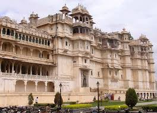

City Palace, Udaipur, is a palace complex situated in the city of Udaipur, Rajasthan. It was built over a period of nearly 400 years, with contributions from several rulers of the Mewar dynasty. Its construction began in 1553, started by Maharana Udai Singh II of the Sisodia Rajput family as he shifted his capital from the erstwhile Chittor to the new found city of Udaipur.The palace is located on the east bank of Lake Pichola and has several palaces built within its complex.The City Palace in Udaipur was built in a flamboyant style and is considered the largest of its type in the state of Rajasthan. It was built atop a hill, in a fusion of the Rajasthani and Mughal architectural styles, providing a panoramic view of the city and its surroundings. Overlooking Lake Pichola, several historic monuments like the Lake Palace, Jag Mandir, Jagdish Temple, Monsoon Palace, and Neemach Mata temple, are all in the vicinity of the palace complex. Nestled within the Aravali mountain range, these landmarks are associated in popular culture with the filming of the 1983
 Call for Help
Call for Help